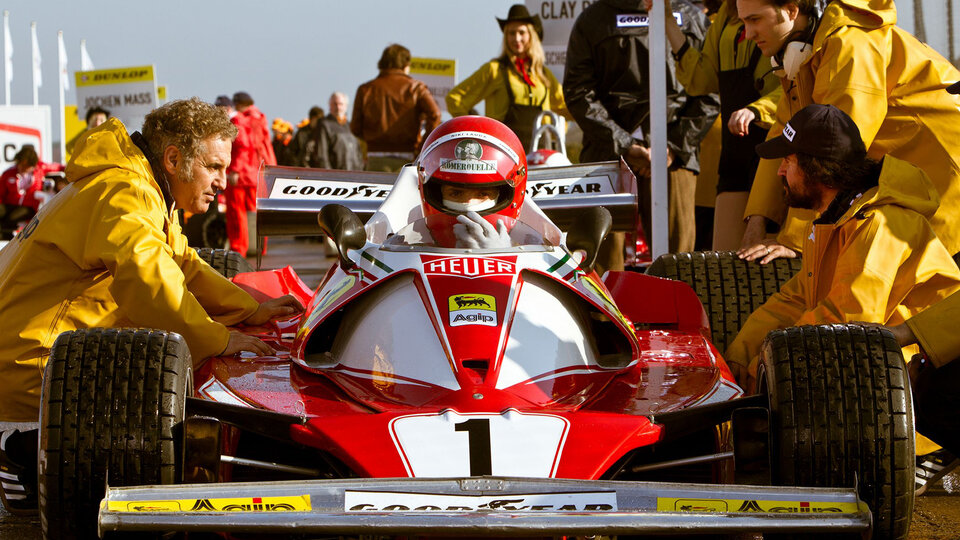
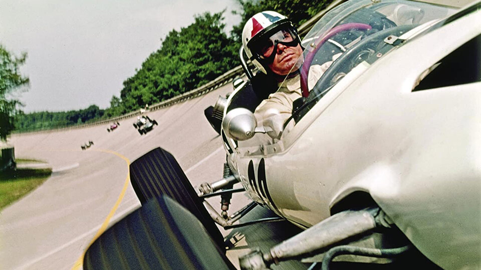

Кажется, что «Формула-1», «Ле-Ман», NASCAR созданы для того, чтобы про них снимали фильмы: постоянная опасность, сложные судьбы и характеры. Но почему тогда так мало действительно успешных картин на эту тему? О полувековой разработке тайной формулы жанра рассказывает редактор Sports.ru Роман Мун.
Вообще-то кино про гонщиков снимали и в 50-х. Кларк Гейбл выезжал на главную трассу Америки — «Индианаполис Мотор Спидвей» — в «Порадовать женщину» (1950); Кирк Дуглас садился за руль в «Гонщиках» (1955). Но расцвел жанр именно в шестидесятые — во многом потому, что в Штатах резко выросла популярность «Формулы-1». Своего по-настоящему престижного чемпионата в Америке не было, хотя уже разгонялась молодая серия NASCAR (о ней чуть ниже), так что гонщики с деньгами и хорошими машинами стремились на международную «Формулу-1», которая считалась самой статусной гонкой мира.
Толпу американских гонщиков в Ф-1, конечно же, заметили в Голливуде, и первый блокбастер про гонщиков не заставил себя ждать. Показательно, что кино в относительно новом жанре было снято вне ветшающей студийной системы независимым продюсером Эдвардом Льюисом (в начале своей карьеры он отличился тем, что заказал сценарий «Спартака» великому Далтону Трамбо, получившему запрет на профессию и несколько месяцев тюремного заключения во времена антикоммунистической охоты на ведьм).

К середине 60-х у режиссера Джона Франкенхаймера уже было сильное резюме: политический триллер «Маньчжурский кандидат», эстетская фантастика «Вторые», военная драма «Поезд». А еще была мечта — когда-нибудь стать гонщиком Ferrari. Поэтому он с восторгом согласился на проект Льюиса, тем более что производственный бюджет фильма составил 10 миллионов.
Денег хватило на все. Во-первых, в «Гран-при» собрался невероятный актерский состав: Ив Монтан, Ева Мари Сэйнт, Тосиро Мифунэ, Франсуаза Арди, Джеймс Гарнер. Вместо Гарнера планировался Стив МакКуин, но он поругался с продюсером и ушел делать свое кино про гонки.
Во-вторых, сложнейшая техника съемок. Заезды снимались с вертолета, а для более крупных планов обгонов и аварий бывший гонщик Билл Фрик собрал инновационные легкие камеры, которые не мешали балансу машин (Франкенхаймер хотел максимального реализма и ощущения высокой скорости).
Техконсультантом фильма стал гонщик Боб Бондюрант — с ним режиссера познакомил Кэррол Шелби (это его играет Мэтт Дэймон в «Ford против Ferrari»), также группу консультировали Грэм Хилл, Брюс Макларен и еще почти два десятка профессиональных пилотов.
Фильм снимали на настоящих трассах «Формулы-1» с невероятным уровнем доступа: на Гран-при Монако гонщики жаловались, что американские гости лезли под колеса прямо во время практики и квалификации.
Все не зря: получился бессмертный фильм про «Формулу-1». Величие «Гран-при» — в визионерстве режиссера: за следующие 50 лет в манере съемок гоночных фильмов ничего принципиально нового так и не придумали. Показательная история: год назад Warner Bros. выложила на YouTube фрагмент «Гран-при» — гонку в Монако. Самый заплюсованный комментарий — удивление зрителя, который узнал, что это снято в 1960-е, а не в 2010-е. И когда в финале гонки болид Джеймса Гарнера улетает с трассы в Средиземное море, нам страшно так же, как было страшно зрителям полвека назад.